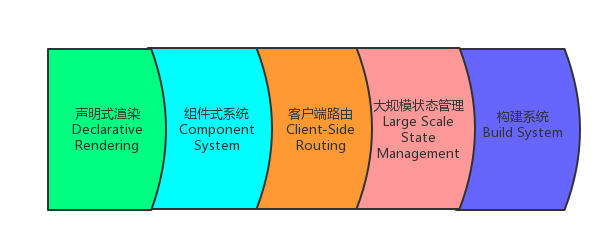
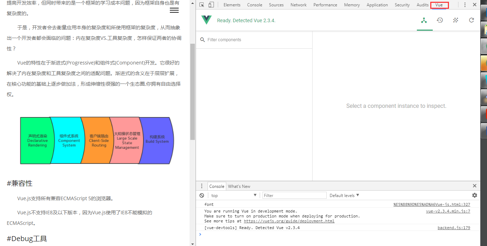

即理解Vue产生的背景及Vue适应背景的特性，可参考尤大Vue2.0-渐进式前端解决方案。框架是用于解决工程上具有一定复杂度的问题而抽象出的模式，以提高开发效率，但同时带来的是一个框架的学习成本问题，因为框架自身也是有复杂度的。
于是，开发者会去衡量应用本身的复杂度和所使用框架的复杂度，从而抽象出一个开发者都会面临的问题：内在复杂度VS.工具复杂度，怎样保证两者的协调性？
Vue的特性在于渐进式(Progressive)和组件式(Component)开发。它很好的解决了内在复杂度和工具复杂度之间的适配问题。渐进式的含义在于层层扩展，在核心功能的基础上逐步做加法，形成伸缩性很强的一个生态圈,你拥有自由选择权。

Vue.js支持所有兼容ECMAScript 5的浏览器。
Vue.js不支持IE8及以下版本，因为Vue.js使用了IE8不能模拟的ECMAScript。
使用vue-devtools帮助我们审查和调试Vue应用,网上给出的下载地址打不开，只好手动安装，安装步骤如下：
1)git clone vue-devtools repo——>https://github.com/vuejs/vue-devtools.git
2)cd vue-devtools && npm install
3)npm run build
4)打开谷歌浏览器扩展界面，chrome://extensions && check "开发者模式"
5)点击"加载已解压的扩展程序"，选择vue-devtools下的shells/chrome
注意：安装完vue-devtools，重启浏览器，选择vue应用页面打开，非vue应用默认不显示vue panel。

语法就不详说了，更多详细介绍可参考vue社区。
vue是mvvm框架,更专注于用户体验的视图层，实现了双向数据绑定。Vue采用数据劫持+发布者-订阅者模式，通过Object.defineProperty劫持各个属性的setter/getter，在数据变动时，发布消息给订阅者，触发相应的监听回调。
Object.defineProperty
首先，我们先来思考，如果要实现数据绑定，我们需要做什么？
1)Model->View，我们需要解析dom中的绑定指令，替换数据，更新dom显示，即解析器Compiler
2)View->Model，我们需要监听dom中的数据变化，绑定相应的更新函数,即监听器Observer
具体实现详见vue-mvvm实现原理，当然这只实现了简易的双向数据绑定，我们可以逐步完善。
vue路由是一个独立的插件，当项目达到一定规模时，需要路由插件完成应用的路径部署。
vue-router+H5 History API构成相对完善的路由，demo示例 | code。或者，vue-router本身设置mode为history也能达到相同的效果，但需要注意的是，路由依存于单页面应用，如果单独访问某个路由则会报404，故需后台配置好相应的路由。